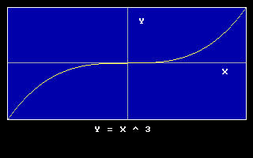

Help Center›FreeBASIC
Windowkeyword
Sets new view coordinates mapping for current viewport
Syntax
Window [ [Screen] ( x1, y1 )-( x2, y2 ) ]Description
Window is used to define a new coordinates system. (x1, y1) and (x2, y2) are the new coordinates to be mapped to the opposite corners of the current viewport; all future coordinates passed to graphics primitive statements will be affected by this new mapping. If Screen is omitted, the new coordinates system will be Cartesian, that is, with y coordinates increasing from bottom to top. Call Window with no argument to disable the coordinates transformation.FreeBASIC's current behavior is to keep track of the corners of the
Window, rather than a specific coordinate mapping. This means that the coordinate mapping can change after calls to View.The
Window corners are also currently taken into account when working on image buffers, so when a Window is in effect, the coordinate mapping will be different from image to image.When there is no
Window in effect, there is no coordinate mapping in effect, so the effective coordinate system is constant, independent of image buffer sizes or View coordinates (if any).Remarks
Differences from QB
- QBASIC preserves the coordinate mapping after subsequent calls to VIEW.
- FreeBASIC's current behavior is to preserve the WINDOW coordinates after calls to VIEW, or when working on images, meaning that the coordinate mapping may undergo scaling/translations. (If a WINDOW hasn't been set, there is no coordinate mapping, and so it doesn't change after calls to VIEW.) The behavior may change in future, but consistent behavior can be be assured over inconstent viewport coordinates by re-calling WINDOW when you change the VIEW.
See also
Example
'' The program shows how changing the view coordinates mapping for the current viewport changes the size of a figure drawn on the screen.
'' The effect is one of zooming in and out:
'' - As the viewport coordinates get smaller, the figure appears larger on the screen, until parts of it are finally clipped,
'' because they lie outside the window.
'' - As the viewport coordinates get larger, the figure appears smaller on the screen.
Declare Sub Zoom (ByVal X As Integer)
Dim As Integer X = 500, Xdelta = 50
Screen 12
Do
Do While X < 525 And X > 50
X += Xdelta '' Change window size.
Zoom(X)
If Inkey <> "" Then Exit Do, Do '' Stop if key pressed.
Sleep 100
Loop
X -= Xdelta
Xdelta *= -1 '' Reverse size change.
Loop
Sub Zoom (ByVal X As Integer)
Window (-X,-X)-(X,X) '' Define new window.
ScreenLock
Cls
Circle (0,0), 60, 11, , , 0.5, F '' Draw ellipse with x-radius 60.
ScreenUnlock
End Sub
Screen 13
'' define clipping area
View ( 10, 10 ) - ( 310, 150 ), 1, 15
'' set view coordinates
Window ( -1, -1 ) - ( 1, 1 )
'' Draw X axis
Line (-1,0)-(1,0),7
Draw String ( 0.8, -0.1 ), "X"
'' Draw Y axis
Line (0,-1)-(0,1),7
Draw String ( 0.1, 0.8 ), "Y"
Dim As Single x, y, s
'' compute step size (corresponds to a step of 1 pixel on x coordinate)
s = 2 / PMap( 1, 0 )
'' plot the function
For x = -1 To 1 Step s
y = x ^ 3
PSet( x, y ), 14
Next x
'' revert to screen coordinates
Window
'' remove the clipping area
View
'' draw title
Draw String ( 120, 160 ), "Y = X ^ 3"
Sleep

Reference
- Documented in KeyPgWindow.html